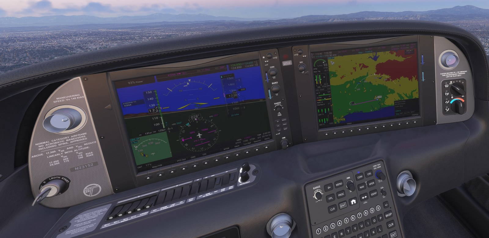
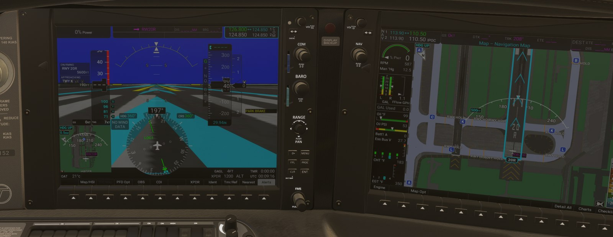
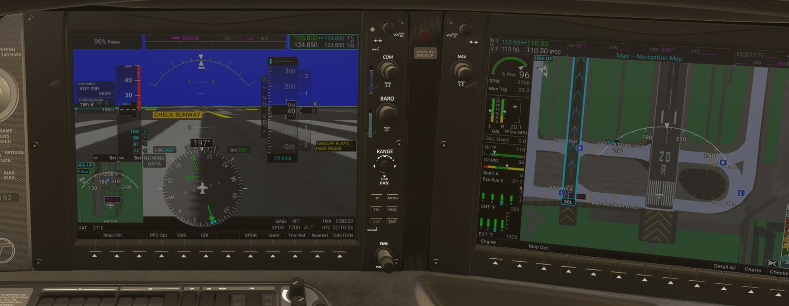

Terrain, surface and protection systems
This chapter covers the systems that warn you or act for you: TAWS-B terrain and obstacle alerting, the obstacle display, SurfaceWatch, SafeTaxi airport maps, the glide and fuel range rings, Electronic Stability and Protection (ESP), the GFC 700 speed protection, and every voice alert the mod adds.
The behaviour follows the Garmin Perspective+ Pilot's Guide (190-02183-03) and the GFC 700 AFM supplement for the SR20 (11934-S57). Where the mod had to choose its own numbers, or stops short of the real system, the text says so.
Two of these systems need the SR20 Companion, the background program that comes with the mod: TAWS-B and the glide range ring. Airport maps for airports outside the included set need it too. See The SR20 Companion and troubleshooting.
TAWS-B terrain and obstacle alerting
TAWS-B (needs the Companion) warns you with an annunciation and a voice when your flight path leads toward terrain or an obstacle, when you descend too fast near the ground, when you sink after takeoff, and when you are too low on the way to the destination runway.
What it does. The stock sim SR22T has no terrain alerting system, only a few fixed voice callouts. The mod adds the TAWS-B of the Pilot's Guide (section 6.6):
- Forward Looking Terrain Avoidance (FLTA) against real terrain elevation data and the FAA obstacle file.
- Excessive Descent Rate, Negative Climb Rate after takeoff and Premature Descent alerts.
- The "Five hundred" callout.
- The Map - TAWS-B page on the MFD, a pop-up alert on the other MFD pages, Inhibit, the self-test, and the TAWS TEST, TAWS FAIL, TAWS N/A and TAWS INH states.
- Potential impact areas on the TAWS-B page and on the PFD synthetic vision.
The forward-looking part is computed by the Companion from Copernicus GLO-90 terrain (90 m grid), which it downloads as you fly and keeps on your PC. The other alerts run inside the aircraft.
Where to find it.
- PFD: the annunciation box at the top, left of the Selected Altitude box.
- MFD: the same annunciation at the bottom left of every page, the pop-up alert, and the Map - TAWS-B page.

Alerts
The PFD and MFD annunciation shows only two alert texts: PULL UP for a warning and TERRAIN for a caution. The
MFD pop-up and the voice tell you which alert it is. A new annunciation flashes for 5 seconds, then stays steady.
| Alert | PFD / MFD annunciation | MFD pop-up text | Voice | What triggers it |
|---|---|---|---|---|
| Reduced Required Terrain Clearance (RTC) warning | PULL UP, white on red |
TERRAIN - PULL-UP, red |
"Terrain, Terrain; Pull Up, Pull Up" | Your projected path passes closer to terrain than the required clearance, within about 30 seconds |
| Imminent Terrain Impact (ITI) warning | PULL UP, white on red |
TERRAIN AHEAD - PULL-UP, red |
"Terrain Ahead, Pull Up; Terrain Ahead, Pull Up" | Terrain in your projected path is at or above your projected altitude, within about 30 seconds |
| RTC caution | TERRAIN, black on amber |
CAUTION - TERRAIN, amber |
"Caution, Terrain; Caution, Terrain" | The same as the RTC warning, within about 60 seconds |
| ITI caution | TERRAIN, black on amber |
TERRAIN - AHEAD, amber |
"Terrain Ahead; Terrain Ahead" | The same as the ITI warning, within about 60 seconds |
| Reduced Required Obstacle Clearance (ROC) warning | PULL UP, white on red |
OBSTACLE - PULL-UP, red |
"Obstacle, Obstacle; Pull Up, Pull Up" | Your projected path passes over an obstacle with less than the required clearance, within about 30 seconds |
| Imminent Obstacle Impact (IOI) warning | PULL UP, white on red |
OBSTACLE AHEAD - PULL-UP, red |
"Obstacle Ahead, Pull Up; Obstacle Ahead, Pull Up" | Your projected path is at or below the top of an obstacle, within about 30 seconds |
| ROC caution | TERRAIN, black on amber |
CAUTION - OBSTACLE, amber |
"Caution, Obstacle; Caution, Obstacle" | The same as the ROC warning, within about 60 seconds |
| IOI caution | TERRAIN, black on amber |
OBSTACLE AHEAD, amber |
"Obstacle Ahead; Obstacle Ahead" | The same as the IOI warning, within about 60 seconds |
| Excessive Descent Rate (EDR) warning | PULL UP, white on red |
PULL-UP, red |
"Pull Up" | Descent rate far too high for your height above the terrain (Pilot's Guide Figure 6-66) |
| EDR caution | TERRAIN, black on amber |
SINK RATE, amber |
"Sink Rate" | Descent rate too high for your height above the terrain |
| Negative Climb Rate after takeoff (NCR) | TERRAIN, black on amber |
DONT SINK, amber |
"Don't Sink" | After takeoff: losing altitude or sinking while still low (Figures 6-68 and 6-69) |
| Premature Descent Alert (PDA) | TERRAIN, black on amber |
TOO LOW - TERRAIN, amber |
"Too Low, Terrain" | Too low for your distance from the destination runway (Figure 6-67) |
| 500 ft callout | none | none | "Five Hundred" | Descending through 500 ft |
While an alert stays the most important one, its voice repeats: warnings every 5 seconds ("Pull Up" every 2.5 seconds), terrain and obstacle cautions and "Too Low, Terrain" every 10 seconds, "Sink Rate" and "Don't Sink" every 5 seconds.
How the forward-looking alerts work.
- The system projects your flight path ahead: 60 seconds for a caution (at least 1.5 NM) and 30 seconds for a warning (at least 0.75 NM). In a turn with more than 5° of bank the projection follows the turn.
- It looks at a corridor around that path, 0.2 NM each side near the aircraft, widening to 0.5 NM each side.
- The required clearance depends on the distance to the nearest runway (Pilot's Guide Figure 6-65). Far from any runway it is 700 ft in level flight and 500 ft in a descent. It reduces toward the runway and is zero within 0.5 NM.
- A climb is credited at your current rate, up to 1,000 ft above your present altitude. A descent is projected at your current rate.
- A new caution has to hold for 2 seconds before it is announced. An alert clears after 6 seconds without a conflict. A warning steps down to a caution after 5 seconds without a warning-level conflict.
- When terrain and an obstacle conflict at the same time, the higher level wins, then the earlier conflict.
How the other alerts work.
- EDR compares your descent rate with your height above the ground under the aircraft. It needs the condition for 2 seconds.
- NCR is active after takeoff while you are within 5 NM of the departure airport, below 700 ft above the departure runway, and heading within 110° of the runway direction. The departure runway comes from the flight plan. Without one, the mod takes the runway you lifted off from: the nearest runway end within 2 NM whose course is within 20° of your heading.
- PDA needs a destination runway in the flight plan, for example from a loaded approach. It is active between 15 NM and 0.5 NM from that runway. It alerts when your height above the runway elevation is below a limit that shrinks as you get closer: about 700 ft at 15 NM, 420 ft at 10 NM, 350 ft at 5 NM, 200 ft at 2 NM and 120 ft at 1 NM.
- "Five Hundred" is called when you descend through 500 ft above the nearest runway threshold of the nearest airport. With no airport nearby it uses 500 ft above the ground. It re-arms when you climb above 550 ft. Behind a caution it waits its turn, under a warning it is dropped, and it is never spoken more than 5 seconds late.
Voice priority. One TAWS voice plays at a time. A warning starts at once, also over the end of a caution phrase. A warning phrase that is already playing is never talked over: the next warning follows it. Cautions and status phrases wait for the phrase in progress.
Behaviour near the destination runway
FLTA is built to stay quiet on a normal approach and departure.
| Situation | What FLTA does |
|---|---|
| On the ground | Off |
| The first 10 seconds after liftoff | Off |
| Below 200 ft above a runway and within 0.5 NM of it, or between its ends | Off (Pilot's Guide section 6.6) |
| Lined up with a runway ahead (course within 15°, within 0.3 NM of the extended centreline, threshold within 15 NM) | The terrain look-ahead stops 0.5 NM before the threshold. The last 2 NM of the final approach path is treated as lying at the runway elevation. Within 2 NM the corridor narrows to 0.1 NM each side. |
| Lined up with a runway within 6 NM, or within 2 NM of any runway | A descent is projected for 20 seconds and then level, not for the full minute. Level flight toward terrain keeps the full look-ahead. |
| Sidestep to a parallel runway on short final (within 3 NM of the threshold, within 30° of the runway course, bank 15° or less) | The caution look-ahead runs straight ahead and does not follow the turn. The turn is still checked over the warning distance. Flat airfield ground beside the runway is ignored. |
The stop 0.5 NM before the threshold, the flattened final approach path and the narrow corridor apply to terrain only. Obstacles are checked along the whole projected path, so a tall obstacle close to the approach path can alert.
The runways the system knows are the departure and destination runway of the flight plan plus the nearest runway ends of hard and soft surface airports within 30 NM, 10 runway ends in total. Heliports and seaplane bases are not counted as runways.
The Map - TAWS-B page
How to reach it.
- On the MFD, turn the large FMS knob to the Map page group.
- Turn the small FMS knob to TAWS-B. The page title reads
Map - TAWS-B.
You can also press ENT while the pop-up alert is shown.
What you see.
- A heading-up map centred on the aircraft with terrain coloured by its height relative to you, and a legend at the bottom right.
GPS ALTat the top right: the GPS altitude in feet above mean sea level (GSL, geometric sea level), rounded to 10 ft. Dashes when there is no GPS position.- The flight plan. Airports, navaids and airspaces are hidden until you choose Show Aviation Data in the menu.
- Obstacles within range, always. The Point Obstacle setting of the other maps does not apply to this page.
- Potential impact areas during a terrain alert.
- A banner in the centre of the map when the system is not working:
TAWS TEST(white),TAWS FAIL(amber) orNO GPS POSITION(amber).
| Terrain colour in the air | Meaning |
|---|---|
| Red | Terrain above you or within 100 ft below you |
| Yellow | Terrain between 100 ft and 1,000 ft below you |
| Green | Terrain between 1,000 ft and 2,000 ft below you |
| Black | Terrain more than 2,000 ft below you |
On the ground the page switches to the ground legend: red for terrain more than 400 ft above you, black for the rest.
Controls.
| Control | What it does |
|---|---|
| Joystick turn | Changes the page's own map range. The page opens at 10 NM. |
| Joystick push | Switches the map pointer on and off. Move it with the joystick. |
| Inhibit softkey | Inhibits or enables the FLTA and PDA alerts. The softkey is highlighted while TAWS is inhibited. |
| Checklist softkey | Opens the checklists |
| MENU > Show Aviation Data / Hide Aviation Data | Shows or hides airports, navaids, user waypoints and airspaces on this page |
| MENU > Inhibit TAWS / Enable TAWS | The same as the Inhibit softkey |
| MENU > Test TAWS System | Starts the self-test. Available below 30 kt ground speed only. |
Potential impact areas
During a terrain caution or warning the terrain that conflicts with your projected path is marked:
- On the Map - TAWS-B page: solid yellow areas for the caution part, solid red for the part inside the warning distance, with a dark rim. Red is used only while the alert itself is a warning.
- On the PFD synthetic vision: the same areas shaded translucent yellow and red on the terrain ahead. Nothing is drawn while synthetic vision is off.
- During an obstacle alert, the obstacle that causes it is drawn in yellow (caution) or red (warning) on every map that shows obstacles and on the synthetic vision, also when Point Obstacle is off or the map range is beyond its setting.
The MFD navigation map and the PFD inset map do not draw the impact areas. They zoom to them: see the next heading.
Terrain auto-range
When a terrain or obstacle alert starts, the maps change range once so the impact area or the obstacle is inside the range ring:
- The Map - TAWS-B page.
- The MFD navigation map, and the other MFD maps that share its range.
- The PFD inset map, 1.5 seconds after the MFD map.
When the alert ends, each map goes back to the range it had before. If you change the range yourself during the alert, your range stays and is not undone.
Pop-up alerts
When an alert starts and the MFD is not on the TAWS-B page, a window opens over the current page:
- Title
TERRAIN ALERT. - The alert text from the table above, on red or amber.
Press "ENT" for TAWS-B pageandPress "CLR" for previous page.
| Key | Action |
|---|---|
| ENT | Opens the Map - TAWS-B page |
| CLR | Closes the pop-up and stays on the current page |
The pop-up for the same alert does not come back after you close it. A different alert opens it again. It closes by itself when the alert ends.
Inhibit
Turning it on and off. On the Map - TAWS-B page press the Inhibit softkey, or MENU > Inhibit TAWS. Do the same again (the menu item then reads Enable TAWS) to switch the alerts back on.
What it does. Inhibit switches off the FLTA terrain and obstacle alerts and the Premature Descent alert, with
their impact areas and pop-ups. Excessive Descent Rate, Negative Climb Rate and "Five Hundred" stay active. The
annunciation shows TAWS INH in white. The setting is not remembered: a new flight starts with TAWS enabled.
Self-test
At avionics power-up the system tests itself for 15 seconds. The annunciation shows TAWS TEST in white and the
TAWS-B page shows the TAWS TEST banner. No alerts are given during the test. When the test passes you hear a single
chime.
You can repeat the test on the ground: Map - TAWS-B page, MENU > Test TAWS System, below 30 kt ground speed.
System states
| Annunciation | Colour | Voice | Cause | What still works |
|---|---|---|---|---|
TAWS TEST |
White | Chime when it passes | Self-test at power-up or from the menu | Nothing until the test ends |
TAWS INH |
White | None | You inhibited TAWS | EDR, NCR, "Five Hundred" |
TAWS N/A |
Black on amber | "TAWS Not Available", then "TAWS Available" when it returns | No GPS position, or the Companion has no terrain data yet for the area ahead (for example the first flight in a new region, while the terrain downloads, or no internet connection) | With no GPS position: nothing. With missing terrain data: EDR, NCR, PDA, "Five Hundred" and the obstacle alerts |
TAWS FAIL |
Black on amber | "TAWS System Failure" | The aircraft gets no terrain results from the Companion: the Companion is not running, was closed, or lost its connection to the sim | EDR, NCR, PDA and "Five Hundred" |
Timing of TAWS FAIL:
- After avionics power-up the system waits 60 seconds for the Companion before it can declare a failure.
- Then it shows
TAWS FAILonce results have been missing for 20 seconds in total. Short interruptions and sim pauses do not count. - It clears by itself when fresh results have arrived for 5 seconds. Starting the Companion in flight is enough.
The status voices are given only after the first self-test has ended. An active alert takes the place of a status text in the annunciation box.
A separate white CAS advisory, TAWS OBSTACLE N/A, appears when the Companion has no obstacle data. Obstacle alerts
are then off and terrain alerts continue.
After the aircraft is moved by more than 1 NM in one step (a new flight, the Instructor Station's approach setup), all TAWS alerts are held back for 5 seconds.
LOW ALT annunciation
What it does. When TAWS cannot protect you on an approach, the PFD shows LOW ALT in black on amber, beside the
TAWS annunciation, if you descend well below the final approach fix altitude too early (Pilot's Guide section 2.3).
When you see it. All of these must be true:
- TAWS is inhibited, shows
TAWS FAIL, or showsTAWS N/Afor missing terrain data. A GPS failure does not enable it, because the function needs GPS. - You are flying a GPS approach with SBAS vertical guidance (SBAS is the satellite augmentation behind WAAS; approach types LPV, LP+V, LNAV/VNAV or LNAV+V), the active leg leads to the final approach fix, and that fix has an "at" or "at or above" altitude.
- Your indicated altitude is 164 ft or more below the FAF altitude.
It flashes for 5 seconds, then stays steady. It clears when you are back within 144 ft below the FAF altitude, when you pass the FAF, or when TAWS works again. It is given hand-flown or on autopilot. There is no voice.
Differences from the real aircraft / limits
- TAWS needs the Companion. Without it the annunciation shows
TAWS FAILabout a minute after power-up and you hear "TAWS System Failure". The alerts listed under "What still works" continue. - The terrain data is a surface model: it includes buildings and tree tops, and the mod adds a 20 m allowance on top. Over a city, alerts come a little earlier than over open ground.
- New terrain needs an internet connection the first time you fly in an area.
- Garmin does not publish its look-ahead times, corridor widths and filters. The values above are the mod's own.
- The impact areas on the synthetic vision are an overlay. They are drawn over nearer ridges and are not hidden behind them. The shaded area is as wide as the search corridor, so it is narrower than in the Pilot's Guide figure.
- The impact areas are drawn on the TAWS-B page and the synthetic vision only, not on the navigation map or the inset map.
- The self-test ends with a chime, not with the "TAWS System Test OK" phrase.
- Obstacle data covers the United States only. Power lines are not included.
- A voice phrase that has started cannot be cut off. A warning starts over the end of a caution phrase.
Obstacles
The obstacle display shows towers and wind turbines on the maps and on the synthetic vision. It needs no Companion. Only the obstacle alerts of TAWS-B need it.
What it does. The mod includes the FAA Digital Obstacle File: 196,090 obstacles in the United States that are 200 ft AGL or taller. The stock sim SR22T shows no obstacles on its maps.
Where to find it.
| Display | Shown |
|---|---|
| MFD navigation map | Yes |
| MFD flight plan page map | Yes |
| MFD Map - TAWS-B page | Yes, always on, when the page range is 10 NM or less |
| PFD inset map | Yes |
| PFD HSI map | Yes |
| PFD synthetic vision | Yes, out to 10 NM |
Symbols and colours on the maps
| Symbol | Obstacle |
|---|---|
| Small tower (an inverted V with a mast) | Tower or other structure lower than 1,000 ft AGL |
| Tall tower with a crossbar | Tower or other structure 1,000 ft AGL or taller |
| Mast with three blades | Wind turbine |
| Any of these with rays at the top | The obstacle is lighted |
| Colour | Meaning |
|---|---|
| Red | The top of the obstacle is above you or within 100 ft below you |
| Yellow | The top is between 100 ft and 1,000 ft below you |
| White | The top is more than 1,000 ft below you |
The colours follow the Pilot's Guide (section 6.6, obstacle symbol tables). A map shows at most the 400 nearest obstacles. The colour is worked out from the aircraft's true altitude, not from the altimeter setting.
On the synthetic vision
Obstacles appear as the same tower and turbine symbols, standing on the terrain at their real position and height.
- They are white. An obstacle that causes a TAWS alert turns yellow (caution) or red (warning).
- Obstacles whose top is more than 1,000 ft below you are not shown.
- The nearest 60 obstacles within 10 NM in front of you are drawn.
- They are an overlay: a tower behind a ridge is still drawn.
- Nothing is drawn while synthetic vision is off.
Point Obstacle setting
Turning it on and off.
- On the MFD navigation map press MENU and select Map Settings.
- Select the Map group.
- Scroll to the Point Obstacle row. It is the mod's row at the end of the group.
- Set the first field to On or Off.
- Set the second field to the largest map range at which obstacles are drawn. The choices run from 0.5 NM to 50 NM.
| Setting | Default | Effect |
|---|---|---|
| Point Obstacle On / Off | On | Shows or hides obstacles on the navigation map, the flight plan page map, the PFD inset map and the HSI map |
| Point Obstacle range | 10 NM | Obstacles are drawn only while the map range is at or below this value |
Both values are remembered between flights. The one setting serves the MFD and the PFD maps. It does not affect the TAWS-B page, the synthetic vision, or the obstacle of a TAWS alert, which is always drawn.
Differences from the real aircraft / limits
- United States only. The data is the FAA Digital Obstacle File, current as of 10/31/26. Outside the US no obstacles are shown and there are no obstacle alerts.
- Only obstacles 200 ft AGL or taller are included. Power lines and other wire obstacles are not.
- The obstacle data is fixed in each version of the mod. It is not updated every 56 days as in the aircraft.
- The sim's own scenery does not always have a tower where the FAA file has one, and the other way round. You can get an alert for a tower you cannot see out of the window.
- There is no separate Point Obstacle setting for the PFD maps.
SurfaceWatch
SurfaceWatch tells you on the PFD where you are on the airport, what you are approaching, and warns you when you take off or land on the wrong surface or on a runway that is too short. It follows Pilot's Guide section 8.4.
What it does.
- The Information Box on the PFD names the runway or taxiway you are on, the next one ahead with its distance, and the ones you are crossing.
- Four alerts with a banner and a voice: TWY TAKEOFF, TWY LANDING, RWY TOO SHORT and CHECK RUNWAY.
- The FPL - SurfaceWatch Setup page on the MFD, where you choose the runways and enter the distances you need.
- The selected runway is outlined in cyan on the MFD maps and on the PFD synthetic vision.
SurfaceWatch works at airports that have an airport map: the airports included with the mod and, with the Companion running, any other airport (see SafeTaxi airport maps). At an airport without a map the box stays empty and no alerts are given.
Where to find it. The Information Box is on the PFD, left of the airspeed tape. The alert banner appears in the middle of the PFD, just below the aircraft symbol. The setup page is in the FPL page group of the MFD.

The Information Box
The box shows up to four parts. A part with nothing to say is left out, and the whole box disappears when it is empty.
On the ground.
| Row | Example | Meaning |
|---|---|---|
ON |
TWY A |
The taxiway you are on |
ON |
RWY 02L/20R |
You are on a runway but not lined up with it |
ON/RMNG |
RWY 20R 5600FT |
You are on a runway and lined up within 15°. The distance is the runway remaining ahead of you, in steps of 100 ft, and 50 ft below 1,000 ft. |
CROSSING |
TWY H |
On a runway: the taxiway that crosses it where you are |
CROSSING |
RWY 02R/20L 2300FT |
On a runway: a crossing runway ahead and the distance to it |
CROSSING |
TWY B |
On a taxiway: you are inside the intersection with this taxiway |
APPROACHING |
TWY L 340FT |
The next taxiway or runway ahead along your track and the distance to its edge, in steps of 10 ft below 1,000 ft and 100 ft above |
APPROACHING |
RWY 20R, TWY J 120FT |
Several surfaces meet at the same point ahead |
- Along a taxiway the box follows the taxiway through its bends to the next junction. It does not look straight ahead through the grass.
- Below 5 kt the box uses your heading, so at a hold line it shows what the nose points at.
- A change of surface has to hold for 1 second before the box changes.
- Where the mod's taxiway name differs from the sim's, the sim's name follows in brackets:
TWY K (G). See SafeTaxi airport maps.
In the air.
| Row | Example | Meaning |
|---|---|---|
AIRBORNE TO |
KSNA |
You are within 6 NM of this airport (kept until 8 NM). With a destination on the Setup page, only that airport is shown. |
APPROACHING |
RWY 20R 1.4NM |
You are on final for this runway. The distance is to the threshold. |
ON/RMNG |
RWY 20L 2800FT |
Shown with a RWY TOO SHORT or CHECK RUNWAY alert: the runway you are lined up with and its remaining length |
APPROACHING |
TWY -----NM |
Shown with a TWY LANDING alert |
You are "on final" when you are below 800 ft AGL, descending, within 3 NM of the threshold, tracking within 20° of the runway course, and inside a funnel around the extended centreline. The state ends with a climb of more than 300 fpm for 3 seconds, above 1,000 ft AGL, or when no runway fits any more.
Parallel runways
On final between two close parallel runways the box picks the runway whose edge you are nearest to, and then holds it steady:
- The box keeps its runway until the other runway has been at least 20 m nearer for 2 seconds. Small drifts around the midline do not make it flip.
- When you sidestep to the parallel runway, the box follows after those 2 seconds.
- The alerts do not use the held runway. They judge the runway you are lined up with at that moment, so a RWY TOO SHORT for the short parallel is not delayed. When an alert is given, the box changes to the alert's runway.
- A sidestep onto a runway is not taken for a taxiway landing, also when your track crosses a taxiway on the way. A sidestep onto the destination runway of the Setup page never gives TWY LANDING until your track has been steady for 20 seconds.
Known limit: drifting along the midline between two close parallels inside 1 NM, RWY TOO SHORT or TWY LANDING can come and go.
Alerts
| Banner | Colour | Voice | Takeoff trigger | Landing trigger |
|---|---|---|---|---|
TWY TAKEOFF |
White on red | "Taxiway" | You apply takeoff power while not on a runway, or on a runway but not lined up with it | |
TWY LANDING |
White on red | "Taxiway" | Below 250 ft AGL, descending, within 1 NM of a runway threshold, not lined up with a runway, and either lined up with a taxiway or pointing at no runway at all | |
RWY TOO SHORT |
White on red | "Runway too short" | The runway remaining ahead of you where the takeoff roll starts is shorter than REQD Takeoff DIS | The length of the runway you are lined up with is shorter than REQD Landing DIS, below 250 ft AGL and within 1 NM of the threshold |
CHECK RUNWAY |
Black on amber | "Check runway" | You are lined up on a runway other than the origin runway of the Setup page | You are lined up with a runway other than the landing runway of the Setup page, below 250 ft AGL and within 1 NM of the threshold |

- Takeoff power means the throttle at 85 % or more, or 2,500 RPM or more, held for half a second on the ground. The takeoff alerts are given at any speed, so you get them at the start of the roll.
- If more than one alert applies, the banner shows the most important one, in the order of the table. The voice speaks once for each new alert.
- An alert has to hold for 1 second (TWY TAKEOFF, RWY TOO SHORT) or 2 seconds (TWY LANDING, CHECK RUNWAY) before it is given. It clears 2 seconds after the condition ends.
- RWY TOO SHORT needs a required distance on the Setup page. CHECK RUNWAY needs a runway selected there. With nothing entered you get only the two taxiway alerts.
- An intersection departure works: the takeoff check uses the runway remaining from where you start the roll, and holds that value for the whole roll.
- The landing RWY TOO SHORT judges the whole runway length, not what is left under a long flare.
The FPL - SurfaceWatch Setup page
How to open it.
- On the MFD, turn the large FMS knob to the FPL page group.
- Turn the small FMS knob to SurfaceWatch Setup. The page title reads
FPL - SurfaceWatch Setup.
What is on it. An airport diagram on the left and two groups on the right.
| Group | Row | What it is |
|---|---|---|
| Origin | Airport | The origin airport of the active flight plan. With no flight plan origin: the airport you are standing on (the nearest within 2 NM, on the ground). You cannot type an airport here. |
| Runway | The departure runway. It follows the flight plan's departure runway until you choose one here. ---- means none. |
|
| Runway Length | The length of that runway. Amber when it is shorter than the required distance. | |
| REQD Takeoff DIS | The takeoff distance you need, 0 to 15,000 ft in steps of 100 ft. ____FT means not set. |
|
| Destination | Airport | The destination airport of the active flight plan |
| Landing Runway | The landing runway. It follows the flight plan's arrival runway (for example from a loaded approach) until you choose one here. | |
| Runway Length | As above | |
| REQD Landing DIS | The landing distance you need, entered the same way |
The diagram shows the airport of the group you are editing: runways in grey, taxiways with their names, and the selected runway outlined in cyan with its designator in cyan. An airport without a map shows its runways only.
Entering values.
- Push the FMS knob to activate the cursor.
- Turn the large FMS knob to the field.
- Turn the small FMS knob to choose the runway or to set the distance.
- Push the FMS knob again to remove the cursor.
A runway that you choose by hand stays chosen until the flight plan's airport changes. A runway that only followed the flight plan keeps following it, for example when you load a different approach.
Reset each flight. The runways and both required distances start empty on every new flight. Enter the distances again before each flight, from your takeoff and landing performance. Within one flight they survive an MFD restart.
The only softkey on the page is Checklist.
SurfaceWatch Inhibit
Turning it on and off.
- On the MFD, turn the large FMS knob to the Aux page group and the small FMS knob to System Setup. If the Setup 2 page is shown, press the Setup 1 softkey.
- Push the FMS knob and scroll to the SurfaceWatch group, in the first column.
- Set Inhibit to On or Off.
What it does. With Inhibit On, SurfaceWatch is off completely: no Information Box, no alert banners, no
voice, and no cyan runway on the maps or the synthetic vision. A white CAS advisory SFC WATCH INHIB is shown. The
SafeTaxi airport map itself stays. The setting is remembered between flights.
Selected runway on the synthetic vision
The runway selected on the Setup page is drawn on the PFD synthetic vision with a cyan outline and cyan chevrons that point down the runway:
- On the ground before takeoff: the origin runway.
- In the air within 5 NM of it, and after landing until the next takeoff roll: the destination runway.
It is hidden when synthetic vision is off, in reversionary mode, and when SurfaceWatch is inhibited.
Differences from the real aircraft / limits
- SurfaceWatch works only at airports with an airport map. Airports outside the included set need the Companion.
- The Information Box is not shown in reversionary mode.
- The Setup page does not have the full behaviour of the Pilot's Guide page: airports cannot be entered by hand, and the required distances are typed in, not taken from a performance calculation.
- The Pilot's Guide judges RWY TOO SHORT on takeoff from the current position during the roll. The mod uses the position where the roll starts.
- The Pilot's Guide gives no numbers for the alert windows. The 250 ft and 1 NM values come from Garmin's description of the same function in another flight deck. The alignment limits and delays are the mod's own.
- In the aircraft, Inhibit switches off the alerts. In the mod it switches off all of SurfaceWatch.
- A late, sharp sidestep (more than about 8° of cut inside 800 m) can still call "Taxiway" briefly.
SafeTaxi airport maps
SafeTaxi draws the airport's taxiways, their names and the hold lines on the MFD maps when you zoom in (Pilot's Guide section 8.1). The same airport maps feed SurfaceWatch.
What it does. The stock sim maps show runways only. The mod adds, for every airport that has a map:
| Item | How it is drawn |
|---|---|
| Taxiways | Light lavender-grey bands at their real width. Ramp connectors are a shade darker. |
| Taxiway identifiers | White bold letters in blue rounded boxes, repeated along long taxiways |
| Hold-short lines | Yellow-orange bars across the taxiway |
| ILS critical area holds | The ladder marking in yellow-orange, when zoomed in far enough |
RWY HOLD and ILS HOLD labels |
Beside the hold lines, at map ranges of 0.25 NM and below |
| The SurfaceWatch selected runway | Cyan outline, cyan chevrons pointing down the runway, and the designator in a cyan-bordered box |
Where to find it. On the MFD navigation map and the other MFD pages that show a map.
Turning it on and off. There is no switch. SafeTaxi is drawn when the map range is 1.5 NM or less and the airport is within 4 NM of the centre of the map. Zoom out past 1.5 NM and it disappears.
The selected runway. One runway is highlighted at a time: the origin runway of the SurfaceWatch Setup page while you are on the ground before takeoff, the destination runway in the air and after landing. With SurfaceWatch inhibited no runway is highlighted.
Taxiway names
The sim's own taxiway names are often wrong, mostly at airports the sim generates automatically. The mod corrects the names from OpenStreetMap. The signs in the sim's scenery still carry the sim's name, so where the two differ the map shows both: the corrected name first and the sim's name in brackets.
| You see | Meaning |
|---|---|
K |
The mod and the sim agree |
K (G) |
The real taxiway is K. The sign you see out of the window says G. |
The PFD Information Box uses the same form, for example ON TWY K (G).
Included airports and on-demand maps
Included. Version 1.0.0 comes with maps for 50 airports:
06C, 0CL3, 1CA6, 2CN3, 37CA, 86CL, 8CA5, CA42, CA76, CA89, F70, KAJO, KAVX, KBNG, KBUR, KCCB, KCMA, KCNO, KCPM, KEMT, KFAA, KFUL, KHMT, KHND, KLAS, KLGB, KMUE, KMYF, KNUC, KNUQ, KNXF, KONT, KORD, KPAO, KPOC, KPSP, KPWK, KRAL, KRIR, KRIV, KSDM, KSEE, KSFO, KSJC, KSLI, KSNA, KSQL, KTOA, L65, MMTJ.
These work without the Companion.
Any other airport (needs the Companion). With the Companion running, the MFD asks it for the map of:
- the origin and destination airport of the flight plan, as soon as you enter them,
- the airport you are standing on,
- airports within 10 NM of the aircraft, also in flight.
The Companion reads the airport from the sim, corrects the taxiway names from OpenStreetMap (this needs an internet connection) and hands the map to the aircraft. A one-line message at the bottom of the MFD tells you what happened:
| Message | Meaning |
|---|---|
SurfaceWatch: loading KXXX airport map... |
The map is being made. This takes a moment. |
SurfaceWatch: KXXX airport map ready |
The map is in use. Zoom in to see it. |
SurfaceWatch: no taxiway map for KXXX |
The sim has no taxiway data for this airport |
SurfaceWatch: KXXX airport map not available |
The Companion could not make the map. It tries again later. |
For nearby airports that you did not ask for, only the "ready" message is shown.
A map made on demand is kept until you install a new version of the mod. After an upgrade it is made again the next time you go there.
Differences from the real aircraft / limits
- The maps come from the sim's own airport data, not from Garmin's SafeTaxi database. They show taxiways, hold lines and names. They do not show buildings, aprons as areas, hot spots or construction notes.
- Where OpenStreetMap has no name for a taxiway, the sim's name is used.
- SafeTaxi is drawn on the MFD only. The PFD inset map does not show it.
- There is no SafeTaxi on/off setting and the 1.5 NM range cannot be changed.
Glide range ring and fuel range ring
Two rings around the aircraft on the maps: how far you can glide, and how far the fuel takes you.
Glide range ring
The glide range ring (needs the Companion) is a solid cyan line around the aircraft. It shows the points you can reach in a power-off glide before you are 1,000 ft above the terrain (Pilot's Guide section 5, Map Settings).
How it is computed. The Companion computes it twice a second in 72 directions:
| Input | How it enters |
|---|---|
| Glide performance | The POH best glide: glide ratio about 9:1, flaps up |
| Weight | Best glide speed between 92 KIAS at 2,600 lb and 100 KIAS at 3,150 lb, from the aircraft's current weight |
| Altitude and temperature | The glide speed is converted to true airspeed with the current air density |
| Wind | The current wind at the aircraft moves every glide path. The ring stretches downwind and shrinks upwind. |
| Turn | Each path starts on your present heading and first turns toward its direction at 30° bank, with the extra height loss of the turn. Points behind you are closer than points ahead. |
| Terrain | Real terrain elevation data. Each path ends where it comes within 1,000 ft of the terrain. High ground pulls the ring in. |
The ring is not a circle. Its shape changes with wind, heading and the terrain around you. Where terrain data is missing in a direction, the ring has a gap there.
When it is shown. In flight above 1,000 ft AGL. It disappears on the ground and below 1,000 ft AGL and returns when you climb through 1,050 ft AGL. It also disappears within 3 seconds when the Companion stops or the sim is paused, and when terrain is missing in more than a quarter of the directions.
Fuel range ring
The fuel range ring needs no Companion. It shows how far you can fly with the fuel on board (Pilot's Guide section 5).
| What you see | Meaning |
|---|---|
Dashed green circle with a time on it, for example 02:45 |
The range until only the reserve is left, and the time to that point in hours and minutes |
| Solid green circle | The range to dry tanks |
| Solid amber circle | Only reserve fuel is left. The circle is the range to dry tanks. |
- The range is fuel on board divided by the current fuel flow, times the current ground speed. It changes with power, mixture and wind. It does not know about wind changes ahead.
- The reserve is 45 minutes. There is no field to change it.
- The ring is drawn in flight only, with a fuel flow of at least 1 GPH and a ground speed of at least 30 kt.
Which maps show the rings
| Map | Glide ring | Fuel ring |
|---|---|---|
| MFD navigation map | Yes | Yes |
| MFD flight plan page map | Yes | Yes |
| PFD inset map | Yes | Yes |
| Other maps | No | No |
Turning the rings on and off
- On the MFD navigation map press MENU and select Map Settings.
- Select the Map group.
- Scroll to the end of the group. The mod adds three rows there: Glide Range Ring, Fuel Range Ring and Point Obstacle.
- Set Glide Range Ring or Fuel Range Ring to On or Off.
| Setting | Default | Remembered between flights |
|---|---|---|
| Glide Range Ring | On | Yes |
| Fuel Range Ring | Off | Yes |
One setting serves all three maps. There is no separate switch for the PFD inset.
Differences from the real aircraft / limits
- The glide ring needs the Companion and terrain data. The first time in a new area the terrain has to download before the ring appears.
- The glide model is the mod's approximation of the POH glide: one glide ratio, a fixed 30° bank for the turn. It is an aid for awareness, as in the aircraft.
- The fuel ring's reserve time cannot be set on the MFD.
Electronic Stability and Protection (ESP)
ESP pushes the controls back toward normal flight when you hand-fly beyond a bank, pitch or speed limit. It follows the GFC 700 AFM supplement (11934-S57) and Pilot's Guide section 8.13.
What it does. The stock sim SR22T has no ESP. In the mod, when you exceed a limit with the autopilot off, a control input opposing the exceedance is added to yours. It starts at about 30 % of full control travel and grows to about 60 % as the exceedance grows. You can always overpower it. Ease off and the aircraft comes back toward the normal range by itself. With the RealSimGear Cirrus yoke and the Companion you also feel the push in the yoke (see the yoke section).
The protections
| Protection | Engages at | Force is at its maximum at | Lets go at | Notes |
|---|---|---|---|---|
| Roll | 45° of bank | 50° of bank | 30° of bank | No force beyond 75° of bank |
| Pitch, nose up | 17.5° nose up | 22.5° nose up | 12.5° nose up | Pushes the nose down. No force beyond 30°. |
| Pitch, nose down | 15.5° nose down | 20.5° nose down | 10.5° nose down | Pulls the nose up. No force beyond 30°. |
| High speed | 200 KIAS | 205 KIAS | 190 KIAS | Pulls the nose up |
| Low speed | The stall warning | About 1.5 seconds after the stall warning starts | Removed over about 2 seconds after the stall warning stops | Pushes the nose down |
| Automatic LVL | ESP engaged for 20 seconds in total within any 40 seconds | The autopilot engages in Level mode. Voice: "Engaging autopilot". |
Automatic LVL in detail. When ESP has been correcting for half of the last 40 seconds, the mod engages the
autopilot with LVL as the lateral and vertical mode, once per episode. It does not do this while the stall warning
is on. To fly by hand again, disconnect the autopilot.
Roll limit indices
While ESP is armed, two white bars are shown on the roll scale of the PFD attitude indicator, one at 45° on each side. When roll protection engages, the bar on that side moves to 30°: it marks where the force will let go. The bars are hidden when ESP is not armed, so they also tell you whether ESP is available.
When ESP is inactive
ESP is armed only when all of these are true:
- ESP is enabled on the Setup 2 page.
- The autopilot is not engaged.
- You are in flight (ground speed above 30 kt or true airspeed above 50 kt) and above 200 ft AGL. Once armed it stays armed down to 150 ft AGL.
- Pitch is within 30° nose up or down and bank is within 75°.
- The attitude source (AHRS) is working.
High speed protection also needs air data. Low speed protection needs air data and the stall warning.
Turning ESP off
- On the MFD, turn the large FMS knob to the Aux page group and the small FMS knob to System Setup.
- Press the Setup 2 softkey. The page title reads
Aux - System Setup 2. - Push the FMS knob. The cursor is on Status in the Stability & Protection group.
- Turn the small FMS knob to Disabled. To switch ESP on again, select Enabled.
Press the Setup 1 softkey to go back to the first System Setup page.
ESP is enabled again at every avionics power-up, as in the aircraft.
The other rows on the Setup 2 page (Stabilized Approach, COM Configuration, Page Navigation, Audio, VNV) show the aircraft's page layout. They are for display and cannot be changed.
Advisories
The ESP advisories appear as messages in the PFD Alerts window (press the Alerts softkey).
| Message | Text | Cause |
|---|---|---|
ESP OFF |
ESP selected off. | You set Stability & Protection to Disabled |
ESP DEGRADE |
ESP IAS mode is inoperative. | ESP is enabled but air data has failed. Roll and pitch protection still work. High and low speed protection do not. |
ESP FAIL |
ESP is inoperative. | ESP is enabled but the attitude source has failed. No protection. |
You can cause these states with the Instructor Station failures or the circuit breakers. See Instructor Station and Aircraft and systems.
Differences from the real aircraft / limits
- The force is added to your control input in the sim. Without a force-feedback yoke you see the aircraft resist and the controls respond less, but you feel nothing in your hand.
- The force levels (30 % to 60 % of control travel) were set by feel against a real SR20 G6. They are not measured values.
- Holding AP DISC does not interrupt ESP in the mod. To fly a manoeuvre beyond the limits, disable ESP on the Setup 2 page.
- The high speed limits above 17,500 ft (Mach-based in the supplement) are not modelled.
- A loss of GPS integrity does not affect ESP in the mod.
GFC 700 speed protection
With the autopilot or flight director flying, the GFC 700 keeps the aircraft from going past Vne and, with the autopilot engaged, from slowing into a stall. The mod adds both, with the numbers of the GFC 700 AFM supplement (11934-S57) and Pilot's Guide section 7.5.
Overspeed protection (MAXSPD)
What it does. In the modes that do not hold an altitude or a glidepath, the flight director watches the airspeed. When the mode cannot hold its reference without exceeding Vne, 201 KIAS, it raises the pitch command just enough to hold Vne.
| Item | Value |
|---|---|
| Works with | The autopilot, or the flight director alone |
| Modes | PIT, VS, FLC, VPTH and altitude capture. Not ALT, GS or GP. |
| Starts | Within 8 kt of Vne with the speed still rising toward it |
| Holds | 201 KIAS |
| Ends | When the selected mode can hold its reference below Vne again, or the speed is 15 kt below Vne, for 2 seconds |
What you see. A flashing yellow MAXSPD above the airspeed tape while the protection is active. The mode
annunciations do not change. There is no voice.
What you do. Reduce power.
MINSPD and the "Airspeed" voice
What it does. With the autopilot engaged in flight, the system warns you when the speed gets low for the flap setting.
| Flaps | "Airspeed" voice at | Protection speed (MINSPD) |
|---|---|---|
| 0 % | 85 KIAS | 80 KIAS |
| 50 % | 80 KIAS | 76 KIAS |
| 100 % | 80 KIAS | 70 KIAS |
What you see and hear.
- The voice says "Airspeed" once when the decelerating airspeed reaches the voice speed, or when the airspeed trend shows that you will reach MINSPD within 6 seconds, whichever comes first.
- At the same moment a flashing yellow
MINSPDappears above the airspeed tape. MINSPDgoes out when the speed is 2 kt above the voice speed again. The voice is ready again after the speed has been 5 kt above the voice speed.- The "Airspeed" voice is dropped while a TAWS alert is active.
Underspeed protection
What it does. If you do not add power, the autopilot gives up its mode to keep the aircraft flying. What it does depends on the mode.
| Altitude-critical modes | Other modes | |
|---|---|---|
| Modes | ALT, GS, GP, TO, GA and altitude capture | PIT, VS, FLC, VPTH, LVL |
| Starts | At the stall warning | When the airspeed falls below MINSPD |
| What the autopilot does | Levels the wings and pitches down to hold airspeed. The target starts at the speed where the warning came on and rises 1 kt per second until the stall warning stops, then stays 2 kt above that speed. | Limits the nose-up pitch so that the airspeed stays at MINSPD. The lateral mode keeps flying. |
| Annunciation | Red warning CAS UNDERSPEED PROTECT ACTIVE. The active lateral and vertical mode fields go blank and the modes are shown in the armed fields. |
Red warning CAS UNDERSPEED PROTECT ACTIVE. The active vertical mode field goes blank and the mode is shown in the armed field. |
| Voice | "Airspeed" every 5 seconds | "Airspeed" once, as in the table above |
| Ends | When you add enough power: climbing more than 200 fpm at the target speed, or 5 kt above it, for 2 seconds. A change of vertical mode also ends it. | When the selected mode can hold MINSPD by itself again for 2 seconds, or the speed is 10 kt above MINSPD |
| Afterwards | The autopilot flies back to the altitude or glidepath it was holding | The mode continues |
What you do. Add power. In an altitude-critical mode the autopilot then returns to the altitude or glidepath by itself. A small power increase only reduces the descent. It takes enough power to climb to end the protection.
Good to know.
- The stall warning does not disconnect the autopilot. The autopilot stays on and protects, as the supplement describes for aircraft with underspeed protection.
- LVL mode is the exception: it disconnects at the stall warning. This is an automatic disconnect with the red and
white flashing
AP(see Autopilot disconnect). - Underspeed protection works with the autopilot engaged. With the flight director alone you get no protection and no MINSPD.
- Hand-flying, low speed is covered by ESP (see above).
Differences from the real aircraft / limits
- The supplement shows
MINSPDat the protection speed, below the voice speed. In the modMINSPDcomes on together with the "Airspeed" voice. The protection still acts at the supplement's speeds. - Engaging the autopilot at 80 to 82 KIAS with the flaps down keeps
MINSPDflashing, because you are inside the voice band. - The table is for the SR20 without ice protection, the only version in the mod.
UNDERSPEED PROTECT ACTIVEis shown in the CAS window, which on this display is to the right of the vertical speed indicator.
Voice alerts
The mod adds the voice alerts of the Perspective+ that the stock sim SR22T does not have. They play in the cockpit like the sim's own warning sounds. They are silent while the PFD has no power.
Where the voices come from. "Pull Up", "Sink Rate", "Don't Sink" and "Five Hundred" are the sim's own voice. "Six hundred" is a separate recording; it is not a Perspective+ callout but an extra cue after takeoff. All other phrases are synthetic voice clips made for the mod, modelled on the Garmin alert voice.
All voice callouts
| Voice | Plays when | Shown with | Needs the Companion |
|---|---|---|---|
| "Minimums, minimums" | You descend to the barometric minimums set on the PFD or the PROC page. Re-arms 50 ft above the minimums. Not on the ground, and not within 3 seconds of changing the minimums. | MINIMUMS on the altimeter |
No |
| "Six hundred" | Climbing through 600 ft AGL after takeoff. Once per takeoff. It re-arms at the next touchdown. A flight that starts in the air does not call it until you have landed. | Nothing | No |
| "Five Hundred" | Descending through 500 ft above the nearest runway (see TAWS-B) | Nothing | No |
| "Engaging autopilot" | ESP switches the autopilot on in Level mode | AP and LVL |
No |
| "Altitude" | You have captured the Selected Altitude and then drift more than 200 ft from it | The altitude alerting on the PFD | No |
| Single chime | You climb or descend to within 200 ft of the Selected Altitude | The altitude alerting on the PFD | No |
| "Airspeed" | Autopilot engaged and the speed is low: once at the voice speed, every 5 seconds during underspeed protection in an altitude-critical mode | MINSPD, UNDERSPEED PROTECT ACTIVE |
No |
| "Timer expired" | The PFD timer, counting down, reaches zero | TIMER EXPIRD message |
No |
| "Vertical track" | One minute before the top of descent | TOD within 1 minute on the PFD |
No |
| "Course, course" | Stabilized Approach: off the lateral course | COURSE |
No |
| "Glidepath, glidepath" | Stabilized Approach: off the GPS glidepath | GLIDEPATH |
No |
| "Glideslope, glideslope" | Stabilized Approach: off the ILS glideslope | GLIDESLOPE |
No |
| "Flaps" | Stabilized Approach: flaps not set for landing | FLAPS |
No |
| "Tailwind" | Stabilized Approach: tailwind on final | TAILWIND |
No |
| "Crosswind" | Stabilized Approach: crosswind on final | CROSSWIND |
No |
| "Baro, baro" | Stabilized Approach: altimeter setting disagrees with GPS altitude | BARO |
No |
| "Taxiway" | SurfaceWatch: takeoff from or landing on a taxiway | TWY TAKEOFF, TWY LANDING |
Only at airports without an included map |
| "Runway too short" | SurfaceWatch: the runway is shorter than the required distance | RWY TOO SHORT |
Only at airports without an included map |
| "Check runway" | SurfaceWatch: not the runway selected on the Setup page | CHECK RUNWAY |
Only at airports without an included map |
| "Terrain, Terrain; Pull Up, Pull Up" | TAWS: terrain clearance warning | PULL UP |
Yes |
| "Terrain Ahead, Pull Up; Terrain Ahead, Pull Up" | TAWS: terrain impact warning | PULL UP |
Yes |
| "Caution, Terrain; Caution, Terrain" | TAWS: terrain clearance caution | TERRAIN |
Yes |
| "Terrain Ahead; Terrain Ahead" | TAWS: terrain impact caution | TERRAIN |
Yes |
| "Obstacle, Obstacle; Pull Up, Pull Up" | TAWS: obstacle clearance warning | PULL UP |
Yes |
| "Obstacle Ahead, Pull Up; Obstacle Ahead, Pull Up" | TAWS: obstacle impact warning | PULL UP |
Yes |
| "Caution, Obstacle; Caution, Obstacle" | TAWS: obstacle clearance caution | TERRAIN |
Yes |
| "Obstacle Ahead; Obstacle Ahead" | TAWS: obstacle impact caution | TERRAIN |
Yes |
| "Pull Up" | TAWS: excessive descent rate warning | PULL UP |
No |
| "Sink Rate" | TAWS: excessive descent rate caution | TERRAIN |
No |
| "Don't Sink" | TAWS: sinking or losing altitude after takeoff | TERRAIN |
No |
| "Too Low, Terrain" | TAWS: premature descent on the way to the destination runway | TERRAIN |
No |
| "TAWS Not Available" | TAWS has lost GPS position or terrain data | TAWS N/A |
No |
| "TAWS Available" | TAWS is available again | TAWS N/A goes out |
No |
| "TAWS System Failure" | The aircraft gets no terrain results from the Companion | TAWS FAIL |
Plays when the Companion is missing |
| Chime | The TAWS self-test has passed | TAWS TEST goes out |
No |
The Stabilized Approach voices and the altitude sounds are described with their annunciations in Autopilot, flight plan and connected devices.
How the voices share the cockpit
- TAWS voices have their own channel. One plays at a time, warnings first (see TAWS-B, Voice priority).
- All other voices share a second channel. They play one after the other in the order they were triggered. The same phrase is not queued twice.
- The two channels are independent, so a TAWS phrase and another phrase can overlap. The exception is "Airspeed", which is dropped while a TAWS alert is active.
- The stall warning horn and the autopilot disconnect tone are the sim's own and are not changed.
Differences from the real aircraft / limits
- There is no setting for the voice. The Audio > Voice row on the Setup 2 page is for display only.
- A phrase that has started plays to its end.
Quick reference
| Control | Where | What it does |
|---|---|---|
| TAWS annunciation | PFD, left of the Selected Altitude box. MFD, bottom left. | PULL UP (red), TERRAIN (amber), TAWS TEST, TAWS INH (white), TAWS N/A, TAWS FAIL (amber) |
| Map - TAWS-B page | MFD, Map page group, TAWS-B | Terrain relative to the aircraft, obstacles, impact areas, GPS altitude |
| Inhibit softkey | Map - TAWS-B page | Inhibits or enables the FLTA and PDA alerts. Not remembered. |
| MENU > Inhibit TAWS / Enable TAWS | Map - TAWS-B page | The same as the softkey |
| MENU > Test TAWS System | Map - TAWS-B page, below 30 kt | Runs the 15 second self-test |
| MENU > Show Aviation Data / Hide Aviation Data | Map - TAWS-B page | Airports, navaids and airspaces on the page |
ENT / CLR on the TERRAIN ALERT pop-up |
MFD, any page | ENT opens the TAWS-B page, CLR closes the pop-up |
LOW ALT |
PFD, beside the TAWS annunciation | Below the FAF altitude by 164 ft or more on a GPS approach while TAWS is inhibited, failed or without terrain data |
| Point Obstacle On / Off and range | MFD navigation map, MENU > Map Settings > Map group | Obstacles on the MFD and PFD maps. Default On, 10 NM. Remembered. |
TAWS OBSTACLE N/A |
CAS advisory | The Companion has no obstacle data. Obstacle alerts are off. |
| SurfaceWatch Information Box | PFD, left of the airspeed tape | ON, ON/RMNG, CROSSING, APPROACHING, AIRBORNE TO rows with distances |
| SurfaceWatch alert banner | PFD, below the aircraft symbol | TWY TAKEOFF, TWY LANDING, RWY TOO SHORT (red), CHECK RUNWAY (amber) |
| FPL - SurfaceWatch Setup page | MFD, FPL page group, SurfaceWatch Setup | Origin and landing runway, REQD Takeoff DIS, REQD Landing DIS, airport diagram. Reset each flight. |
| SurfaceWatch Inhibit | MFD, Aux page group, System Setup (Setup 1), SurfaceWatch group | Switches SurfaceWatch off completely. Shows SFC WATCH INHIB. Remembered. |
| SafeTaxi | MFD maps at a range of 1.5 NM or less | Taxiways, names, hold lines, selected runway in cyan. No switch. |
| Glide Range Ring | MFD navigation map, MENU > Map Settings > Map group | Cyan glide ring on the MFD navigation map, flight plan page map and PFD inset. Default On. Remembered. Needs the Companion. |
| Fuel Range Ring | The same group | Green fuel range rings on the same maps. Default Off. Remembered. |
| Setup 2 softkey | MFD, Aux page group, System Setup | Opens Aux - System Setup 2 |
| Stability & Protection > Status | Aux - System Setup 2 page |
Enabled / Disabled: switches ESP on and off. Enabled again at every power-up. |
| Setup 1 softkey | Aux - System Setup 2 page |
Back to the first System Setup page |
| Roll limit indices | PFD roll scale | White bars at 45°, moving to 30° on the engaged side. Shown while ESP is armed. |
ESP OFF, ESP DEGRADE, ESP FAIL |
PFD Alerts window | ESP disabled, air data lost, attitude lost |
MAXSPD |
PFD, above the airspeed tape | The flight director is holding Vne, 201 KIAS. Reduce power. |
MINSPD |
PFD, above the airspeed tape | Autopilot engaged and the speed is low for the flap setting. Add power. |
UNDERSPEED PROTECT ACTIVE |
CAS, red | The autopilot has given up its mode to hold airspeed. Add power. |